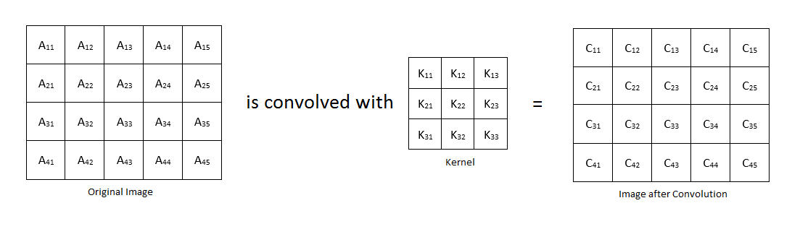

过滤图像
图像滤波是邻域操作，其中通过将特定算法应用于相应输入像素附近的像素值来确定输出图像中的任何给定像素的值。该技术通常用于平滑，锐化和检测图像和视频的边缘。让我们来讨论图像过滤技术，内核和卷积时使用的一些术语的含义。
核心(Kernel)
核心是具有奇数高度和奇数宽度的矩阵。它也被称为卷积矩阵(Convolution Matrix)、掩模(Mask)或滤波器(Filter)。核心根据其值分布命名。核心用于在图像过滤操作中定义像素的邻域。一些流行的内核是标准化盒式过滤器(Normalized box filter)、高斯内核(Gaussian kernel)、拉普拉斯核心(Laplacian kernel)、边缘检测核心(edge detecting kernels)等。核心可以用不同的大小来定义。但是大核心导致大的处理时间。 这是一个3x3标准化盒式过滤器。该内核用于均匀平滑（模糊）。
这是一个5 x 5标准化盒式过滤器。 该内核也用于均匀平滑。 同样，您可以创建一个规格化的盒式过滤器，其中任何大小都可用于均匀平滑。

这是用于高斯平滑（模糊）的3×3高斯核。

这是用于高斯平滑（模糊）的5×5高斯核。以同样的方式，你可以创建任何大小的高斯内核。应使用二维高斯函数计算内核的值分布。
x，y是原点位于中心的内核坐标。（即，在核心的中心元素处x=0且y=0。）σ是高斯分布的标准偏差。对于较大的标准偏差，需要较大的内核以便精确地执行高斯平滑。以下5 x 5高斯核的标准偏差为1。


卷积
卷积是通过在整个图像上滑动内核并基于内核的值和原始图像的重叠像素的值计算每个像素的新值来对图像执行的数学运算。C22 =（K11×A11 + K12×A12 + K13×A13）+（K21×A21 + K22×A22 + K23×A23）+（K31×A31 + K32×A32 + K33×A33）
C23 =（K11×A12 + K12×A13 + K13×A14）+（K21×A22 + K22×A23 + K23×A24）+（K31×A32 + K32×A33 + K33×A34）
C24 =（K11×A13 + K12×A14 + K13×A15）+（K21×A23 + K22×A24 + K23×A25）+（K31×A33 + K32×A34 + K33×A35）
C32 =（K11×A21 + K12×A22 + K13×A23）+（K21×A31 + K22×A32 + K23×A33）+（K31×A41 + K32×A42 + K33×A43）
C33 =（K11×A22 + K12×A23 + K13×A24）+（K21×A32 + K22×A33 + K23×A34）+（K31×A42 + K32×A43 + K33×A44）
以相同的方式C34，可以在卷积图像中计算。但是，卷积图像边界中的其他值（例如C11，C12等）不能以相同的方式计算，因为内核与边界处的原始图像部分重叠。因此，应该计算非重叠的不存在的像素值，以便确定卷积图像的边界处的像素值。有各种技术来处理这个边界值，但我不打算在本教程中讨论它。